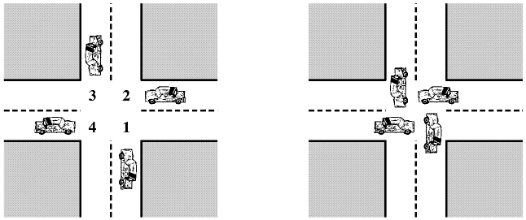

Трета лятна изследователска школа, Варна, 2003 г.
Операционни системи
Операционната система (ОС) използва хардуерните ресурси
на един или повече процесора, за да осигури обслужване на един или повече
потребители. Операционната система управлява паметта и входно/изходните
устройства.
1.1 Базисни елементи.
1.2 Регистри и режими на процесора.
1.3 Изпълнение на инструкциите.
1.4 Прекъсвания.
Операционната система е програма, която управлява изпълнението
на приложни програми и е интерфейс между потребителя на компютъра и хардуера.
2.1 Цели и функции на операционната система.
2.2 Еволюция на ОС.
2.3 Основни достижения на съвременните ОС.
* ОС организира изпълнението на няколко процеса, за
да максимизира използването на процесора, докато осигурява разумно време
за отговор на интерактивните потребители.
* ОС разпределя ресурси на процесите в съответствие
със специфичните им изисквания и приоритети, като в същото време избягва
"мъртва хватка".
* ОС поддържа връзките между процесите и създаването
на процеси от потребителите.
3.1 Състояния на процеси.
3.2 Описание на процеси.
3.3 Управление на процеси.
Централни теми при изграждане на ОС:
- многопрограмна работа;
- многопроцесорна работа;
- разпределени процеси.
Конкуренция на процеси - 3 различни аспекта:
- разпределение на процесорното време между много на брой
активни приложения;
- структурирани приложения - за повишаване на ефективноста
някои приложения се програмират като множества от конкурентни процеси;
- структурата на ОС често е множество от конкурентни процеси.
5.1 Принципи на конкуренцията.
5.2 Взаимно изключване: софтуерен подход.
5.3 Взаимно изключване: хардуера поддръжка.
5.4 Семафори.
5.5 Задача за производител/потребител.
5.6 Задачата на бръснаря.
5.7 Задачата на писатели/читатели.

6.1 Принцини на "мъртва хватка" (МХ).
6.2 Предпазване (prevention) от МХ.
6.3 Избягване (avoidance) на МХ.
6.4 Откриване (detection) на МХ.
6.5 Интегрирана стратегия.
6.6 Задача за обядващите философи.
Цели:
- бързи отговори на интерактивните потребители;
- бързо изпълнение на заданията;
- ефективно използване на процесора.
9.1 Типове планирания.
9.2 Алгоритми за планиране.
Литература
1. William Stallings, Operating
Systems: Internals and Design Principles, Prentice
Hall, 3/е 1998, 4/е 2002.
2. Лилян Николов, Операционни
системи, ИК "Сиела", София, 1998.
3. Лилян Николов, UNIX.
Системно програмиране, ИК "Сиела", София, 2002.
| Николай Киров |
nkirov@math.bas.bg |
|
http://www.math.bas.bg/~nkirov/2003/os_sc/main.html |